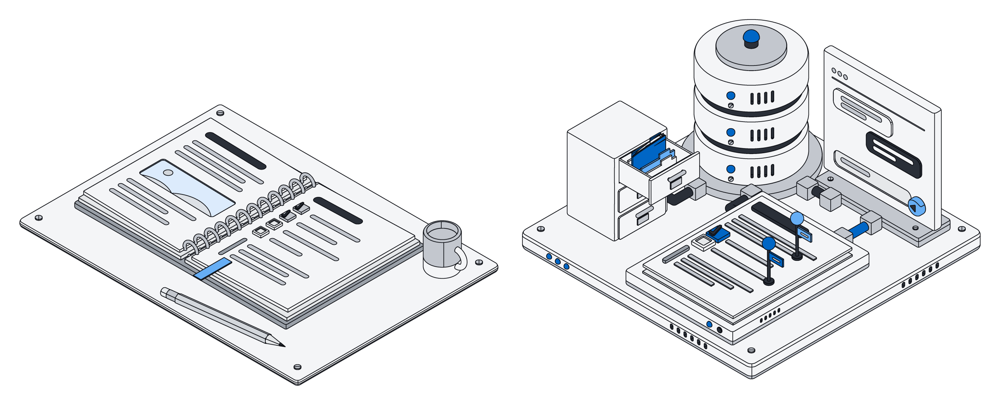
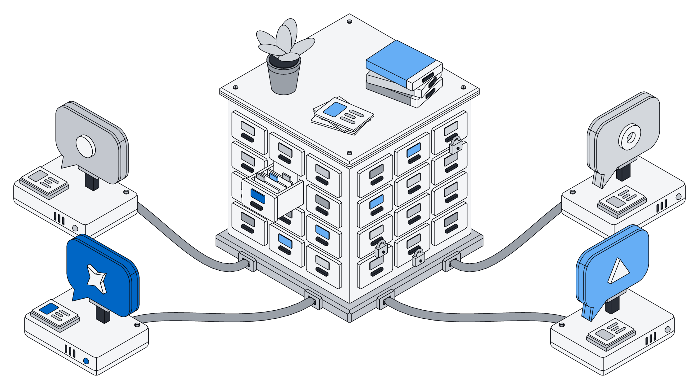
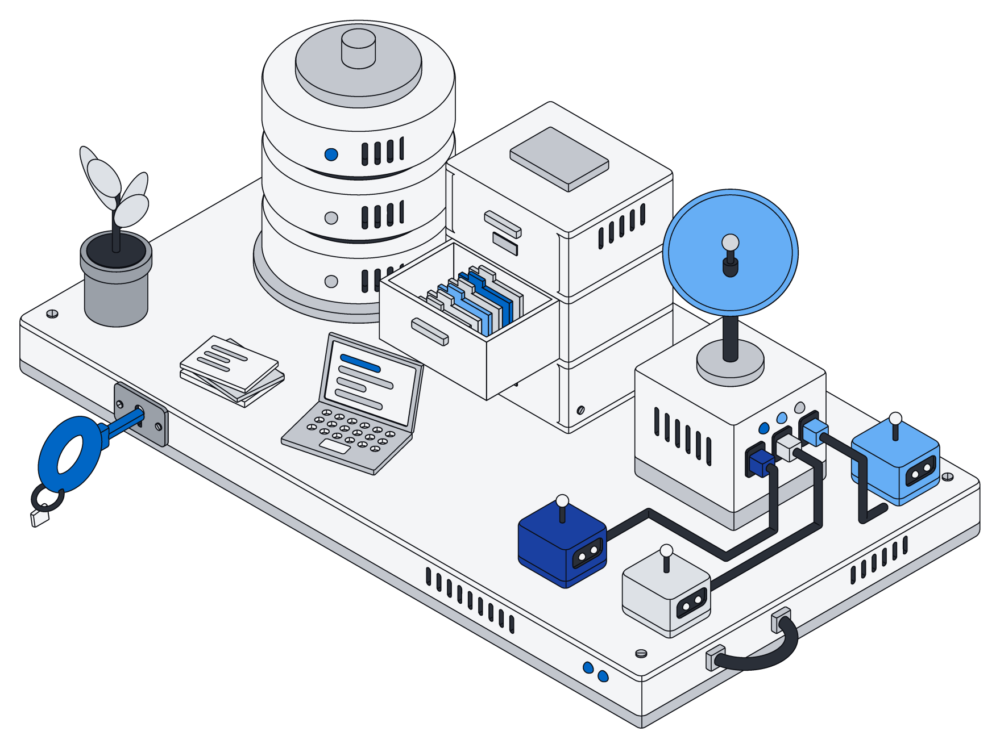
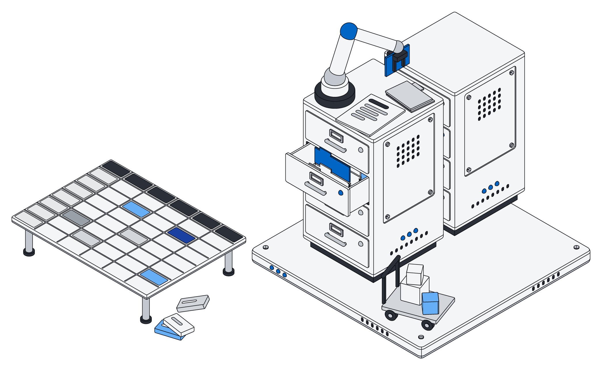
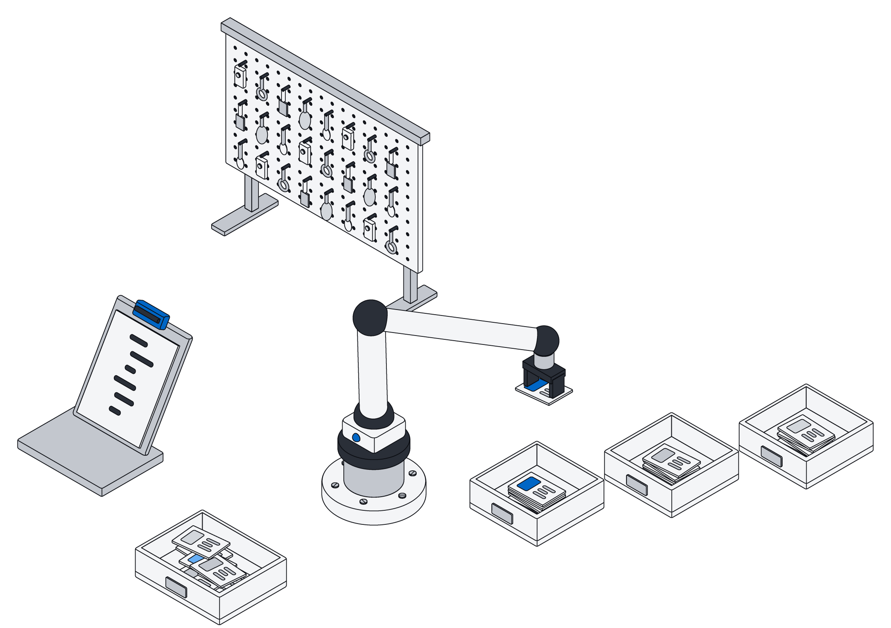
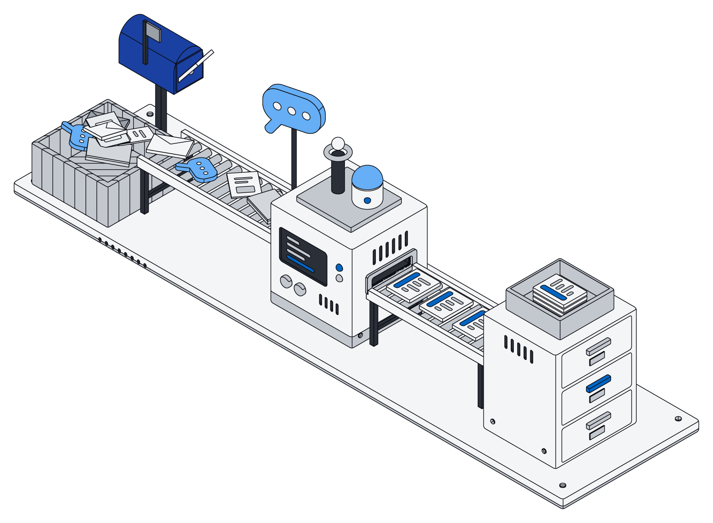
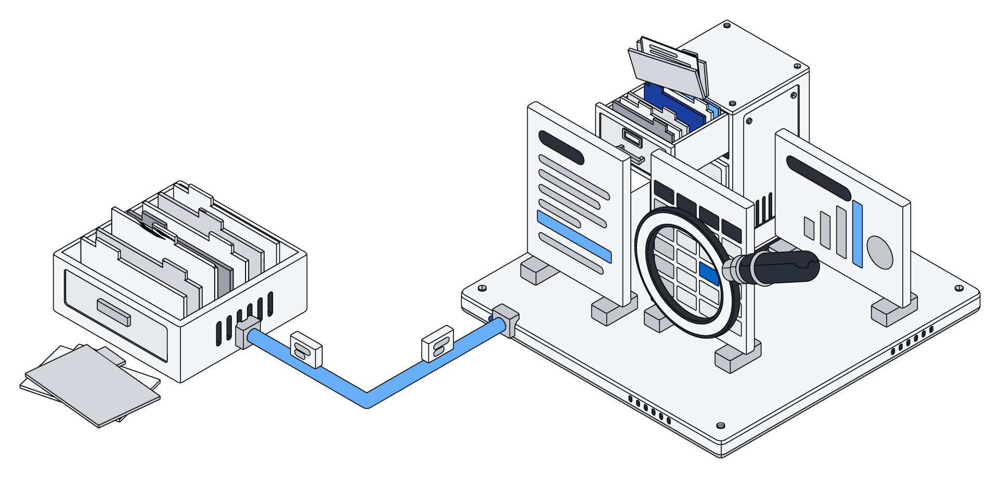
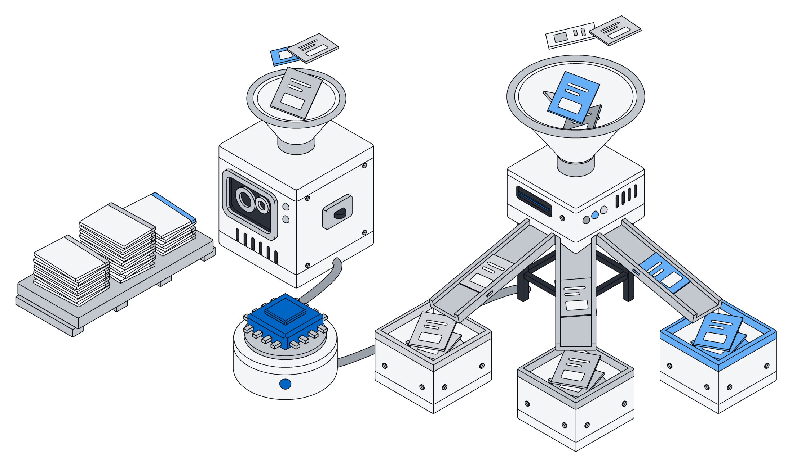
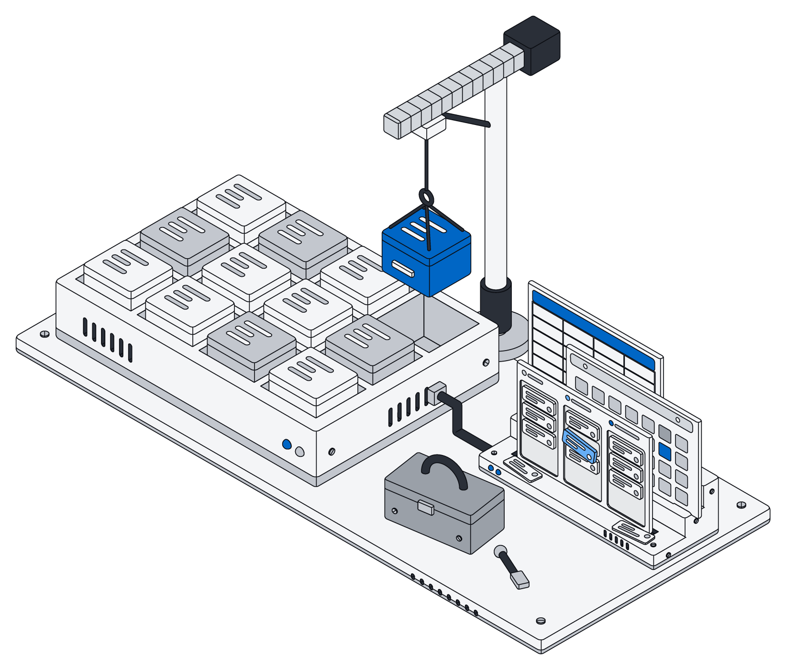

Blog
How Archive compares, how teams use it with their AI, and why we built it the way we did.

Archive vs Notion
Both give your team pages and lists. The difference shows up when your AI starts doing the work.

Give your AI your company's memory
ChatGPT and Claude are brilliant and know nothing about your business. Here is how to fix that.

Own your data infrastructure
Your company's knowledge is its most valuable asset. It should live somewhere you control.

Archive vs Airtable
Flexible lists are great until you outgrow them. What changes when there is a real database underneath.

Why your AI gets one tool, not a hundred
Fewer buttons, better answers: how letting your assistant write a little code changes what it can do.

From messy inbox to clean records
Mail, files and chats arrive the way they are. A tour of how they become something you can use.

Archive vs Google Drive and SharePoint
Folders hold files. Archive also knows what is in them, and lets your AI edit them in place.

Train a model that knows your business
Everything your team files is a lesson. Turn it into a small model that sorts new work the way you would.

Change how your data is organized, anytime
Businesses change shape. Your workspace should bend with them without losing a thing.